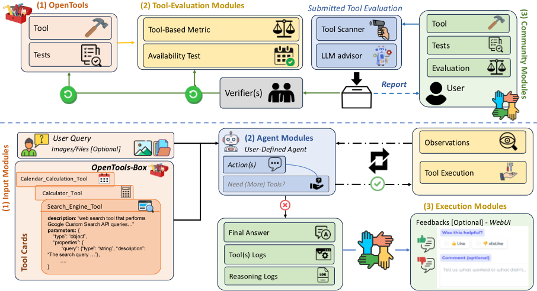
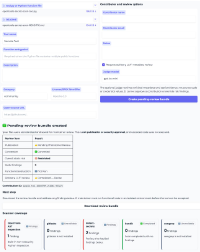
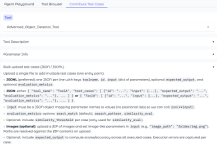
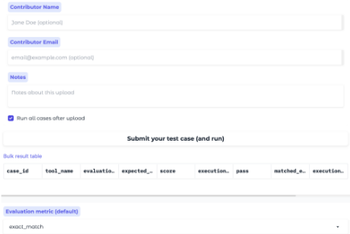
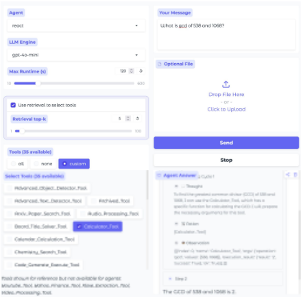

开放、可靠与共建：面向工具使用型 AI Agent 的社区驱动框架
论文指出工具增强型 LLM（TALM）的可靠性包含两种失效模式：Agent 是否正确选择与调用工具（tool-use accuracy），以及工具本身的正确性、稳定性与安全性（intrinsic tool accuracy），而后者长期被忽视。作者提出社区驱动的开源工具箱 OPENTOOLS：用确定性转换器把带类型注解的 Python 函数打包为含 JSON schema 与 tool card 的可审查 bundle，上传工具只做非执行式静态风险扫描（AST 分析、密钥检测，辅以 GITLEAKS/BANDIT/SEMGREP 等），可选 LLM judge 仅基于脱敏证据给出建议，功能测试与最终验收由人工维护者完成，并配套回归测试与可靠性记录；同时通过 MCP server 与 Web 界面实现跨 Agent 框架的受控接入。在 15 个基准、4 种 Agent 策略上，42 工具的 OPENTOOLS-T 相对 13 工具的 OctoTools-T 带来 6%~22% 相对提升，在需要外部操作的 Agent 任务上收益最大。核心结论：工具侧内在质量是 Agent 端到端可靠性的关键变量，工具治理应成为 Agent 基础设施的一部分。
现有工具增强 LLM 研究主要优化 Agent 的工具选择与调用（tool-use accuracy），默认工具本身正确稳定；实际中工具会因覆盖不全、API 与依赖漂移、非确定性、限流和静默错误而失败，工具访问还引入安全与凭证风险，且现有基准常把模型错误与工具侧故障混为一谈、很少度量工具漂移与回归，导致 Agent 端到端可靠性受制于被忽视的工具侧质量。
提出 OPENTOOLS 框架，含两条互补工作流：(1) Tool Accuracy and Maintenance Loop——用确定性转换器把带类型注解的 Python 函数转为含 JSON schema、输出契约与 tool card（记录依赖、来源、限制、风险证据、评估历史）的可审查 bundle；上传工具仅做非执行式检查（AST 分析识别凭证访问、文件写入、网络/进程能力、动态执行与嵌入密钥，辅以 GITLEAKS、DETECT-SECRETS、BANDIT、SEMGREP），可选 LLM judge 只基于脱敏元数据与证据给出建议，功能测试由维护者本地执行并做最终人工验收；评估记录区分 completed/failed/blocked/not-run 状态，社区贡献的失败案例转为回归测试。(2) Agentic Workflow——通过原生接口或 MCP server 暴露显式 allowlist 的工具，Agent 策略（ReAct、OctoTools、MultiAgent）作为即插即用组件与工具访问解耦；execution manager 校验参数、执行调用、返回观察并记录结构化 trace，用于把失败归因到策略错误（tool-use）或工具侧问题（intrinsic reliability）。
社区贡献的任务专用工具箱 OPENTOOLS-T（42 个工具）相对 OctoTools-T（13 个工具）在多个 Agent 架构上带来 6%~22% 的相对提升
gpt-4o-mini：工具增强相对无工具 Prompting，OctoTools-T 下 ReAct/OctoTools 分别 +16.86%/+8.70%（相对），OPENTOOLS-T 下升至 +38.09%/+32.83%
gpt-5-mini：OctoTools-T 下 ReAct 仅比 Prompting 平均高 1%、OctoTools 可能低于 Prompting；OPENTOOLS-T 下 ReAct 与 OctoTools 平均 78.08/75.83，均超过 Prompting 的 73.49
换用 OPENTOOLS-T 的相对增益：ReAct 18.16%/5.19%、OctoTools 22.16%/6.7%（gpt-4o-mini/gpt-5-mini），MultiAgent +4.86%
Agent 任务收益最大：ReAct 相对 Prompting 提升 143%/161%（OctoTools-T/OPENTOOLS-T），OctoTools Agent 提升 115%/150%；强模型下 OPENTOOLS-T 在 Agent 上再超 OctoTools-T +7.58%（ReAct）/+16.32%（OctoTools）/+22.67%（MultiAgent），MultiAgent+OPENTOOLS-T 取得最佳 Agent 分数 66.14
附录：gpt-5-mini 零样本（73.49）优于 CoT（71.45）
与聚焦 tool learning、提示与推理策略的已有工作不同，本文显式区分 tool-use accuracy 与 intrinsic tool accuracy，把工具可靠性当作需持续维护的属性而非固定假设；主要贡献在基础设施层面：标准化 JSON schema 工具接口、面向审查的工具生命周期（非执行式风险扫描、脱敏 LLM 顾问、人工门控验收、回归测试与可靠性记录），以及通过 MCP 实现跨 Agent 框架即插即用，填补了现有基准“混淆模型错误与工具故障、不度量工具漂移与回归”的空白。
相关度级别：high
命中能力域：3.3 Agent 架构与工具使用 | 3.5 评测与可靠使用
理由：直接命中团队 3.3（工具/函数调用、MCP 工具协议、execution manager 与 harness 设计、策略与工具访问解耦、单 Agent 执行可靠性）与 3.5（工具可靠性评测与回归、风险与安全扫描、人工验收的人机协作流程、可靠性记录与失败归因）。对“把模型用好而非训练模型”的团队，本文核心论点——Agent 端到端可靠性很大程度取决于工具侧质量而非仅提示或策略——直接影响内部工具库的治理方式；实验还给出有工程指导意义的结论：强模型配弱工具箱时 Agent 策略可能劣于纯 Prompting，复杂策略（MultiAgent）配弱工具箱会受损，说明工具投入优先级可能高于策略复杂度。
建议动作：深入精读并做内部分享
arXiv:2604.00137v2 [cs.AI] 2026年7月10日
开放、可靠与集体化：面向工具使用型 AI Agent 的社区驱动框架
Hy Dang 1 , Quang Dao 2 , Meng Jiang 1 ,
1 圣母大学，2 罗斯-霍尔曼理工学院，
https://github.com/hydang99/opentools
集成工具的大语言模型（LLM）能够检索信息、执行计算并采取现实世界中的行动，但其可靠性同时取决于工具调用准确性与工具内在准确性，后者包括工具的正确性、稳定性与安全性。尽管已有工作主要强调工具调用，工具内在准确性却仍未得到充分研究。我们提出 OPENTOOLS 1，这是一个由社区驱动、可维护的工具箱，用于发现、使用、评估以及贡献开源工具。OPENTOOLS 标准化工具接口，将带有文档的 Python 函数转换为可审查的捆绑包，支持由维护者触发的评估，并将非执行式风险检查与可选的咨询性 LLM 审查相结合。公开的网页演示 2 允许用户运行工具与 Agent、查看证据、贡献测试，并提交工具以供维护者审查，同时 MCP 支持来自外部应用程序的受控访问。实验表明，在多种 Agent 架构上，由社区贡献的面向特定任务的工具相比现有工具箱可带来 6% 至 22% 的相对提升，凸显了工具内在准确性的重要性。OPENTOOLS 以 Apache 2.0 许可证发布，演示视频见 https:// www.youtube.com/watch?v=XhRwATwIBxU 。
社区仍然是扩展工具覆盖范围、贡献工具与失败案例以及审查证据的核心，而自动化则减少了标准化和评估贡献所需的工作量。在多个不同领域中，OPENTOOLS 中更高质量、面向特定任务的工具覆盖在多种 Agent 架构上相比现有工具箱可带来 6% 至 22% 的相对提升。我们希望 OPENTOOLS 能够支持开放、可靠且持续维护的工具生态系统，以服务于可复现且可信赖的研究。
OPENTOOLS 是一个开源、社区驱动的框架，用于为工具集成型语言模型构建、评估、共享和部署工具。它支持两种互补的工作流程，如图 1 所示：（1）工具准确性与维护循环（Tool Accuracy and Maintenance Loop），用于标准化贡献、评估工具的内在可靠性并维护共享工具箱；（2）智能体工作流程（Agentic Workflow），用于将工具集合集成到 LLM Agent 中。该框架采用通用的工具 schema，将工具维护与 Agent 策略分离，并记录结构化的评估与执行证据，以支持可复现性与调试。
Agent 可能选择了正确的工具和参数，但仍然收到错误或不可用的结果。工具行为可能因 API 更新、依赖漂移、非确定性、速率限制或后端故障而发生改变。因此，工作流程 1 将工具的内在准确性视为一种需要维护的属性，而非固定的假设。
问题定义。给定工具 τ、其源代码 S τ、测试套件 T t 以及执行策略 P，OPENTOOLS 生成一条可靠性记录。
该记录包括工具版本、评估、静态风险证据、测试结果和执行状态。该工作流程由三个阶段组成：贡献与标准化、风险感知评估以及社区维护。
OPENTOOLS 的关键设计贡献是一条面向评审的生命周期，它将工具标准化与自动化证据及维护者评审相衔接。每个工具都拥有自然语言描述、带类型的 JSON Schema、输出契约，以及记录依赖关系、溯源信息、局限性、风险证据和评估历史的工具卡片。对于受支持的 Python 函数，一个确定性转换器会根据类型注解推导出 Schema，生成标准化的包装器，保留源代码，并将相关工件打包以供评审。含糊的入口点和不支持的函数签名会引发显式错误，而非被推断式转换。
分层非执行检查。在任何被允许的功能测试之前，OPENTOOLS 会在不导入或运行所提交源代码的前提下对其进行检查。其 AST 分析器能够识别语法错误、凭据访问、文件系统写入、网络与进程能力、动态执行以及可能内嵌的机密信息。在可用的情况下，GITLEAKS 和 DETECT-SECRETS 提供额外的机密检测，而 BANDIT 和 SEMGREP 则识别 Python 特有的以及基于规则的安全问题。它们的输出被规范化为包含扫描器状态、规则、严重程度、源码位置和脱敏证据的报告。不可用或运行失败的扫描器会被显式保留，潜在的机密值则被隐去。这些发现为风险评估提供支持，并帮助维护者快速识别所贡献工具中的潜在风险。
面向贡献者的咨询式评审。贡献者会收到生成的工具卡片、转换状态、扫描器覆盖情况、详细发现以及建议操作。他们还可以选择请求一个可选的 LLM 评审器，该评审器基于脱敏后的元数据和证据总结关注点、所需操作以及建议。LLM 不会接收原始源代码或凭据值。相反，贡献者可以利用这些证据来完善自己的工具实现。
门控式评估与维护者评审。托管接口会对新上传的工具进行检查，但不会执行它们。维护者会在本地对明确选定且满足所配置风险策略的工具运行功能测试。扫描器发现、测试结果以及可选的 LLM 建议提供支持性证据，而最终的接受决定由人类维护者做出。
2

社区成员通过代码仓库或网页界面贡献工具、测试和故障报告。维护者评审贡献包，被接受的案例将成为后续评估的回归测试。为了更新可靠性证据，维护者可以手动重新评估选定的工具，重新生成工具卡片和共享清单，并在提交之前审查由此产生的变更。这一过程将社区反馈与可重复的评估联系起来，同时保持维护者对共享工具箱的控制。
维护循环（Maintenance Loop）关注工具的内在可靠性，而智能体工作流则将 OPENTOOLS 用作面向工具集成的大语言模型（LLM）智能体的工具箱。它将工具集合打包以供各类智能体框架通用，并提供具有透明、可调试轨迹的端到端执行。
问题定义。给定用户查询 q、工具箱 S 和智能体策略 π（例如基于提示的规划/路由或自定义控制流），智能体工作流通过执行工具调用和中间推理步骤产生答案 y。它还输出执行轨迹 L，记录工具使用情况及其结果，以支持可复现性与故障诊断：( q, S , π ) → ( y, L )。
工作流概述。智能体工作流包含两个阶段：(i) 智能体设置与工具访问，以及 (ii) 交互式任务执行。
设置阶段规定智能体可以使用哪些工具，以及这些工具如何对外暴露。
工具箱接口。智能体通过原生 OPENTOOLS 接口或模型上下文协议（Model Context Protocol, MCP）访问 Workflow 1 中定义的标准化工具表示。MCP 支持对显式列入允许清单的工具进行发现、检查、评估和调用，从而无需针对特定工具的适配器即可与外部应用程序集成。
智能体策略选择。OPENTOOLS 包含多种标准智能体策略（例如 ReAct (Yao et al., 2023b)、OctoTools (Lu et al., 2026) 和 MultiAgent），并通过自定义控制器和工作流支持用户自定义的智能体。策略模块决定动作选择，策略被视为即插即用组件，从而将工具访问与决策逻辑解耦。
在执行过程中，智能体迭代地更新任务状态、调用工具并生成最终答案。执行管理器在策略与工具箱之间充当中介：它根据 schema 校验参数、执行工具调用、将结果作为观测结果返回，并记录失败情况（例如异常、速率限制、超时）。OPENTOOLS 会记录工具调用、输入/输出和错误状态的结构化轨迹，从而支持可复现性，并能将失败归因于策略错误（工具调用）或工具端问题（内在可靠性），同时将行为与 Workflow 1 的可靠性信号相关联。系统输出答案与轨迹，供交互式检查和离线分析使用。
OPENTOOLS 提供了一个公开的网页演示界面 3，无需本地安装即可使用这两种工作流。用户可以查看工具卡片和已记录的评估结果、运行受支持的工具和预定义的 Agent、贡献测试用例、提交开源工具以供审核。附录 A.1 提供了更多界面细节。
工具准确性与贡献。对于 Workflow 1，用户可以查看 schema 与使用指南、在自定义输入上运行受支持的工具，并查看最新一次记录的评估结果。单个或批量测试用例均可作为候选回归用例提交。“Contribute Tools”界面会应用上文所述的转换与非执行检查流水线，展示其风险与扫描器证据，并可选地请求大语言模型（LLM）对脱敏后的证据进行咨询性审查。随后，该界面会创建一个待审核包；上传的程序既不会被执行，也不会被自动发布。
Agent 式工作流交互。对于 Workflow 2，该演示提供了一个端到端沙箱，用户可以在其中输入任务查询、可选择地限制工具子集，并运行预定义的 Agent 配置（例如 ReAct (Yao et al., 2023b)、OctoTools (Lu et al., 2026)）。界面会同时返回最终响应和结构化执行轨迹，其中包括工具调用序列、工具参数、中间观测结果以及错误（如有）。用户可以对工具级输出和整体 Agent 响应提供反馈，从而便于诊断失败究竟是源于工具调用决策，还是源于工具内在问题。
3 https://huggingface.co/spaces/opentools/ opentools
我们在智能体工作流下对 OPENTOOLS 进行评估，以量化社区维护的工具箱如何在多个 Agent 框架间影响端到端任务性能。具体而言，我们比较了配备 OPENTOOLS 工具箱（包括社区贡献的工具和测试）时的 Agent 性能与配备一个强大的精选工具箱基线（OctoTools 工具箱）时的 Agent 性能。我们的评估兼顾广度（众多基准测试（benchmark）与领域）和通用性（多种 Agent 策略），同时保持底层基础大语言模型（LLM）固定不变。
遵循 OctoTools 测试平台协议 (Lu et al., 2026)，我们评估了一套横跨多个领域与推理类型的多样化基准测试套件，并将其划分为五个任务类别：VQA/谜题（AlgoPuzzleVQA (Ghosal et al., 2025)、Hallusion-VD (Guan et al., 2024)、PuzzleVQA (Chia et al., 2024)、VQAv2 (Goyal et al., 2017)）、数学/推理（Game of 24 (Lile, 2024)、Omni-MATH (Gao et al., 2024)、CLEVR-Math (Lindström and Abraham, 2022)、MathVista (Lu et al., 2023)）、科学（GPQA (Rein et al., 2024)、MMLU-Pro (Wang et al., 2024b)、SciFiBench (Roberts et al., 2024)）、医学（MedQA (Jin et al., 2021)、PathVQA (He et al., 2020)、SLAKE (Liu et al., 2021)）以及智能体（GAIA-Text (Mialon et al., 2023)）。
我们比较了两个实验性工具箱。OctoTools-T 是 OctoTools 测试平台（Lu et al., 2026）所使用的包含 13 个工具的集合，其中包括一个通用解决方案生成器，以及用于网络搜索、图像理解、代码生成和分类的领域工具。OPENTOOLS-T 包含 42 个工具，其来源有三类：搜索与计算等通用工具、面向视觉和化学等领域的精选领域工具，以及专用迷宫求解器等社区贡献工具。所有 OPENTOOLS-T 工具均遵循第 2 节所述的通用接口，并可通过工具准确性与维护循环（Tool Accuracy and Maintenance Loop）进行重新评估。
4
| Task | Prompting.- | ReAct.OctoTools-T | ReAct.OpenTools-T | OctoTools.OctoTools-T | OctoTools.OpenTools-T | MultiAgent.OctoTools-T | MultiAgent.OpenTools-T |
|---|---|---|---|---|---|---|---|
| VQA/Puzzle | 45.38 / 74.36 | 55.52 / 73.13 | 68.95 / 79.92 | 52.13 / 69.75 | 67.01 / 80.48 | 72.4 | 75.28 |
| Math/Reasoning | 43.77 / 83.58 | 48.71 / 83.67 | 59.03 / 85.33 | 42.93 / 78.23 | 55.54 / 81.28 | 81.25 | 83.15 |
| Scientific | 46.54 / 80.20 | 50.67 / 75.67 | 53.38 / 79.89 | 47.87 / 76.11 | 52.97 / 77.11 | 69.48 | 73.78 |
| Medical | 43.56 / 69.56 | 52.00 / 69.11 | 57.59 / 71.52 | 53.00 / 66.78 | 55.48 / 68.50 | 66.05 | 68.67 |
| Agent | 5.51 / 21.41 | 14.17 / 51.97 | 28.50 / 55.91 | 4.72/ 46.03 | 24.41 / 53.54 | 53.92 | 66.14 |
| Average | 42.16 / 73.49 | 49.27 / 74.23 | 58.22 / 78.08 | 45.84 / 71.10 | 56.00 / 75.83 | 71.67 | 75.15 |
| Task | Prompting.- | ReAct.OctoTools-T | ReAct.OpenTools-T | OctoTools.OctoTools-T | OctoTools.OpenTools-T | MultiAgent.OctoTools-T | MultiAgent.OpenTools-T |
| OctoTools-T | OPENTOOLS-T | |
|---|---|---|
| Total tools | 13 | 42 |
| Program-based | 1 | 16 |
| API-based | 8 | 19 |
| Prompting-based | 4 | 7 |
| | OctoTools-T | OPENTOOLS-T |
我们按照工具的主要执行机制对其进行分类。基于程序（Program-based）的工具在本地执行计算，不依赖远程服务。基于 API 的工具封装外部托管的服务，这类服务可能需要用户提供凭证。基于提示（Prompting-based）的工具通过固定的提示模板实现由模型介导的功能。表 2 总结了由此形成的工具构成。
OPENTOOLS-T 的实现既包括新开发的工具，也包括改编自 OctoTools（Lu et al., 2026）和 AWorld（Yu et al., 2025）等生态系统的开源封装器。经过改编的工具被重构为在各类智能体策略之间使用一致的模式（schema）。这种更广泛的工具构成使我们能够考察工具覆盖面与工具内在质量如何影响端到端的智能体性能。
智能体框架（Agent Frameworks）。我们在多种智能体框架下评估我们的系统：(i) 提示（Prompting）：大语言模型（LLM）不使用工具直接作答。我们实验了零样本（zero-shot）和思维链（chain-of-thought, CoT）提示两种方式，后者是在不借助外部工具的情况下进行逐步推理。在初步实验中，对于 gpt-4omini 和 gpt-5-mini，零样本方式总体表现更好；因此，我们在主要结果中将零样本作为 Prompting 进行报告，并在附录 A.2 中提供完整的零样本/CoT 对比。(ii) ReAct Agent（Yao et al., 2023b）：一种迭代式的推理-行动（reason-and-act）智能体，将自然语言推理与工具调用交替进行。(iii) OctoTools Agent（Lu et al., 2026）：OctoTools 框架中定义的规划器-执行器（planner-executor）风格智能体。(iv) 多智能体框架（MultiAgent Framework）：受 LemonAgent（Jiang et al., 2026）启发，我们采用一种分层流水线，将查询分解并将子问题路由给专门的子智能体。与 LemonAgent 不同，我们 (i) 在路由之前执行显式的基于推理的分解，并且 (ii) 使用验证器/护栏（Verifier/guardrail），确保共享记忆中只存储经过验证的中间结果。规划器（Planner）对查询进行分解，生成器（Generator）发出工具调用，工具被执行并加以验证，经过验证的结果被写入记忆，最后由组合器（Composer）生成最终答案，并附上基于记忆的简要总结。
对于使用工具的智能体，我们在每个框架下分别运行 (i) OctoTools 工具箱（OctoTools-T）和 (ii) 我们的 OPENTOOLS 工具箱（OpenTools-T），从而在相同决策逻辑下对工具集进行受控比较。遵循 OctoTools (Lu et al., 2026) 的做法，我们对 OpenTools-T 执行贪心工具选择，以挑选适合任务的工具子集。对于 OctoTools-T，我们使用 OctoTools 论文中报告的、在每个任务上取得最佳性能的工具集。
表 1 比较了各智能体框架下的 OctoTools（OctoTools-T）与我们的 OpenTools 工具箱（OPENTOOLS-T）。为了实现直接可比，我们在表 1 中使用与 OctoTools 相同的采样实例标识符来报告任务组准确率。我们在每种设置下运行三次独立试验，并在附录 A 中报告各基准测试（benchmark）的均值 ± 标准差。
工具增强效应。对于较弱的模型（gpt-4o-mini），工具增强始终优于无工具提示。使用 OctoTools-T 时，ReAct 和 OctoTools 相对 Prompting 分别获得 +16.86% 和 +8.70% 的（相对）提升；使用 OPENTOOLS-T 时，提升幅度升至 +38.09% 和 +32.83%。这表明工具能显著增强较小的大语言模型（LLM）。对于较强的模型（gpt5-mini），无工具提示在知识/推理密集型任务（VQA/Puzzle、Math/Reasoning、Scientific、Medical）上已经表现很强，因此工具带来的收益较小，在工具箱较弱时甚至可能转为负值。使用 OctoTools-T 时，ReAct 相对 Prompting 平均仅提升 +1%，而 OctoTools 的表现可能不及 Prompting。相比之下，使用 OPENTOOLS-T 时，ReAct 和 OctoTools 均优于 Prompting（平均分别为 78.08 和 75.83 对 73.49），这表明即使对于强大的基础模型，工具的可靠性和覆盖范围仍然十分重要。
5
工具在最难的 Agent 任务上作用最大，这类任务需要执行外部动作。与 Prompting 相比，结合 OctoToolsT/OPENTOOLS-T 的 ReAct 分别提升 143% / 161%（相对值），结合 OctoToolsT/OPENTOOLS-T 的 OctoTools 分别提升 115% / 150%。
更好的工具带来一致的收益。用 OPENTOOLS-T 替换 OctoTools-T 可提升所有智能体框架的性能。平均而言，OPENTOOLS-T 为 ReAct 带来 18.16%/5.19% 的相对提升，为 OctoTools 带来 22.16%/6.7% 的相对提升（gpt-4o-mini / gpt-5-mini），并为 MultiAgent 带来 4.86% 的提升。这些收益在各领域均保持一致，表明更全面、更可靠的工具箱能够转化为更好的端到端智能体性能。
最大的提升集中在 Agent 任务上，在该任务中工具的广度和鲁棒性至关重要。对于较强的模型，在 Agent 任务上，OPENTOOLS-T 相对 OctoTools-T 分别提升 +7.58%（ReAct）、+16.32%（OctoTools）和 +22.67%（MultiAgent）。结合 OPENTOOLS-T 的 MultiAgent 取得了整体上最佳的 Agent 分数（66.14），但我们也观察到，当与可靠性较低的工具箱搭配时，复杂的智能体策略在较简单的任务上可能产生负面影响（例如，结合 OctoTools-T 的 MultiAgent 平均表现不及 Prompting）。总体而言，OPENTOOLS-T 提供了最一致的收益，尤其是对于工具密集型的最终目标任务。
工具调用与智能体化大语言模型（LLM）。有关工具调用与智能体化 LLM 的先前工作主要关注模型如何通过训练或提示来规划并调用外部工具，包括 Toolformer 风格的学习（Schick et al., 2023）、ReAct 推理与行动（Yao et al., 2023b），以及在此基础上增加反思/搜索与多步工具执行的智能体控制器（Patil et al., 2024; Dang et al., 2025）。这些工作主要致力于提升工具调用准确率，但往往假设底层工具是正确且稳定的。
与此同时，各类工具库与评估框架（例如 LangChain 4、AutoGen 5）拓宽了工具的获取途径，并提供了领域专用套件（例如化学领域（Wu et al., 2025）、医疗领域（Li et al., 2024a）、视觉领域（Hu et al., 2024））。现有的基准测试（benchmark）评估端到端任务成功率与工具调用能力（Huang et al., 2023; Guo et al., 2024），但常常将模型自身的错误与工具侧的故障混为一谈，且很少度量工具随时间推移出现的漂移或回归。OPENTOOLS 通过标准化 JSON-schema 工具接口、提供社区维护的封装器（wrapper），并支持借助可靠性信号与回归追踪对工具进行内在评估，弥补了这一基础设施缺口——在支持跨智能体框架即插即用的同时，将工具调用与工具可靠性分离开来。
我们提出了 OPENTOOLS，这是一个由社区驱动且可维护的工具箱，用于在大语言模型（LLM）智能体中发现、贡献、评估和使用开源工具。该框架将工具调用准确率与工具内在准确率区分开来，并提供了一套以审查为导向的生命周期，将标准化工具接口、自动化的风险与可靠性证据以及维护者验证结合在一起。其公开的网页界面支持社区参与，而模型上下文协议（MCP）则支持与外部应用程序的受控集成。实验表明，质量更高、面向特定任务的工具能够在各种智能体策略下带来一致的改进，包括相对于现有工具箱 6% 至 22% 的相对提升。
未来的工作将扩展面向特定领域的工具和回归测试，加强隔离评估与纵向评估，并研究大规模的社区维护。尽管分层扫描和辅助性的 LLM 审查能够提供有用的证据，但它们无法保证工具的正确性或安全性。因此，一个定义明确、责任清晰的贡献流程，辅以对接受与发布环节的人工监督，将始终是 OPENTOOLS 的核心。
4 https://github.com/langchain-ai/langchain
5 https://github.com/microsoft/autogen
6
工具贡献。如第 2.3 节所述，用户可以通过上传 Python 和 README 文件、提供工具元数据，并可选择请求 LLM 审查来贡献开源工具。该界面执行确定性转换和非执行式检查，然后返回一个待审（pending-review）包，其中包含标准化包装器（wrapper）、工具卡和审查证据。面向贡献者的报告呈现转换状态、总体风险、扫描器覆盖情况、详细发现、建议操作以及可选的 LLM 建议。不可用的扫描器会被明确报告，而不会被当作已通过的检查。上传的代码不会被执行或自动发布；维护者会审查该包并单独运行功能测试，之后才予以接受。图 2 展示了提交与报告界面。


测试用例贡献。如第 2.3 节所述，网页界面允许用户为工具评估贡献测试用例。提交的用例在加入共享的 OPENTOOLS 测试套件之前，会由我们的团队进行审查。图 3 展示了提交说明和受支持的格式。图 4 展示了编写界面，用户可以在提交的用例上运行工具，并将输出存储在批量结果表中。评估使用提交时指定的指标，或从网站上预定义列表中选择的指标。

Agent 工作流。图 5 展示了我们网页演示中的 Agent Playground，用户可在其中选择预定义的 Agent 和基础 LLM。用户可以选择启用并配置工具检索，以便在将工具暴露给 Agent 之前对其进行过滤。该界面在 Agent Answer 框中显示 Agent 的响应和详细的执行日志，用户还可以对工作流提供反馈。
提示方法对比。我们比较了两种不使用工具的基线：零样本（Zero-shot）提示和思维链（Chain-of-Thought, CoT）提示。CoT 使用表 4 中的模板引出显式的逐步推理。总体而言，两种方法的表现相近；值得注意的是，更强的模型（gpt-5-mini）在零样本下的表现优于 CoT（73.49 对 71.45），这表明在无需额外指令的情况下，其内在推理能力有所提升。
10
| Agent.Datasets | ReAcT.OctoTools-T | ReAcT.OPENTOOLS-T | OctoTools.OctoTools-T | OctoTools.OPENTOOLS-T | MultiAgent.OctoTools-T | MultiAgent.OPENTOOLS-T |
|---|---|---|---|---|---|---|
| VQA / Puzzle | VQA / Puzzle | VQA / Puzzle | VQA / Puzzle | VQA / Puzzle | VQA / Puzzle | VQA / Puzzle |
| AlgoPuzzleVQA Hallusion-VQA PuzzleVQA VQA 2.0 | 39 . 66 ± 2 . 39 / 71 . 66 ± 0 . 84 65 . 56 ± 2 . 53 / 67 . 50 ± 0 . 87 36 . 89 ± 1 . 75 / 72 . 01 ± 1 . 93 79 . 96 ± 1 . 82 / 81 . 33 ± 0 . 99 | 77 . 11 ± 0 . 95 / 85 . 22 ± 1 . 64 68 . 00 ± 1 . 64 / 70 . 33 ± 0 . 15 41 . 03 ± 1 . 28 / 73 . 79 ± 1 . 85 89 . 64 ± 0 . 68 / 90 . 33 ± 1 . 39 | 38 . 56 ± 2 . 04 / 55 . 33 ± 2 . 04 62 . 78 ± 1 . 36 / 69 . 00 ± 1 . 96 48 . 05 ± 1 . 06 / 70 . 68 ± 2 . 57 59 . 11 ± 1 . 64 / 84 . 00 ± 1 . 64 | 73 . 00 ± 0 . 72 / 86 . 00 ± 1 . 54 66 . 00 ± 1 . 18 / 75 . 33 ± 2 . 10 46 . 83 ± 1 . 75 / 73 . 91 ± 1 . 13 82 . 22 ± 1 . 13 / 86 . 66 ± 1 . 27 | 70 . 25 ± 3 . 03 66 . 55 ± 1 . 83 71 . 56 ± 2 . 97 81 . 25 ± 1 . 48 | 75 . 67 ± 2 . 02 67 . 33 ± 0 . 82 73 . 45 ± 1 . 93 84 . 67 ± 1 . 19 |
| Math / Reasoning | Math / Reasoning | Math / Reasoning | Math / Reasoning | Math / Reasoning | Math / Reasoning | Math / Reasoning |
| Game of 24 Omni-MATH CLEVR-Math MathVista | 76 . 66 ± 1 . 32 / 100 . 00 ± 0 . 00 27 . 50 ± 0 . 37 / 74 . 67 ± 0 . 65 38 . 66 ± 1 . 56 / 85 . 00 ± 1 . 76 52 . 00 ± 3 . 58 / 75 . 00 ± 2 . 87 | 98 . 67 ± 0 . 98 / 100 . 00 ± 0 . 00 33 . 00 ± 2 . 05 / 76 . 78 ± 0 . 41 48 . 77 ± 1 . 50 / 87 . 22 ± 1 . 22 55 . 67 ± 2 . 18 / 77 . 33 ± 1 . 49 | 40 . 89 ± 1 . 54 / 98 . 33 ± 1 . 32 30 . 55 ± 1 . 59 / 71 . 57 ± 1 . 87 47 . 44 ± 1 . 25 / 72 . 00 ± 1 . 87 52 . 84 ± 1 . 91 / 71 . 00 ± 1 . 74 | 91 . 22 ± 0 . 68 / 100 . 00 ± 0 . 00 29 . 33 ± 1 . 15 / 73 . 24 ± 2 . 56 48 . 03 ± 1 . 44 / 78 . 20 ± 1 . 86 53 . 56 ± 0 . 41 / 73 . 67 ± 3 . 56 | 100 . 00 ± 0 . 84 70 . 13 ± 1 . 54 84 . 62 ± 1 . 73 70 . 23 ± 3 . 51 | 100 . 00 ± 0 . 00 71 . 91 ± 1 . 45 89 . 67 ± 2 . 87 71 . 00 ± 2 . 34 |
| Knowledge / QA | Knowledge / QA | Knowledge / QA | Knowledge / QA | Knowledge / QA | Knowledge / QA | Knowledge / QA |
| GPQA MMLU-Pro SciFIBench | 35 . 67 ± 2 . 69 / 70 . 33 ± 3 . 37 54 . 33 ± 3 . 46 / 74 . 67 ± 2 . 56 62 . 00 ± 0 . 85 / 82 . 00 ± 1 . 07 | 39 . 22 ± 4 . 79 / 75 . 33 ± 0 . 56 56 . 69 ± 0 . 68 / 80 . 00 ± 0 . 97 64 . 22 ± 0 . 87 / 84 . 33 ± 1 . 18 | 37 . 17 ± 2 . 86 / 72 . 00 ± 3 . 38 40 . 67 ± 0 . 47 / 72 . 33 ± 1 . 28 65 . 78 ± 0 . 56 / 84 . 00 ± 0 . 56 | 38 . 01 ± 0 . 68 / 73 . 00 ± 1 . 86 57 . 33 ± 1 . 02 / 74 . 67 ± 0 . 96 63 . 56 ± 0 . 95 / 83 . 67 ± 0 . 63 | 69 . 38 ± 3 . 64 73 . 38 ± 2 . 37 65 . 67 ± 0 . 84 | 73 . 67 ± 0 . 79 78 . 00 ± 1 . 34 69 . 67 ± 1 . 28 |
| Medical / Multimodal | Medical / Multimodal | Medical / Multimodal | Medical / Multimodal | Medical / Multimodal | Medical / Multimodal | Medical / Multimodal |
| MedQA PathVQA SLAKE | 76 . 67 ± 1 . 09 / 92 . 00 ± 1 . 27 31 . 33 ± 3 . 63 / 45 . 33 ± 0 . 68 48 . 00 ± 0 . 25 / 70 . 00 ± 1 . 35 | 79 . 33 ± 1 . 73 / 94 . 89 ± 0 . 15 39 . 45 ± 1 . 36 / 47 . 89 ± 0 . 81 54 . 00 ± 0 . 47 / 71 . 78 ± 0 . 83 | 77 . 00 ± 0 . 40 / 92 . 67 ± 0 . 43 35 . 50 ± 0 . 81 / 42 . 00 ± 1 . 37 46 . 50 ± 1 . 77 / 65 . 66 ± 2 . 37 | 76 . 44 ± 0 . 47 / 94 . 33 ± 1 . 68 36 . 66 ± 1 . 02 / 43 . 50 ± 0 . 36 53 . 33 ± 0 . 26 / 67 . 67 ± 0 . 39 | 90 . 11 ± 1 . 25 44 . 83 ± 1 . 18 63 . 21 ± 2 . 55 | 93 . 00 ± 0 . 23 46 . 33 ± 0 . 49 66 . 67 ± 1 . 65 |
| General / Agent | General / Agent | General / Agent | General / Agent | General / Agent | General / Agent | General / Agent |
| GAIA-Text | 14 . 17 ± 2 . 11 / 51 . 97 ± 3 . 48 | 28 . 5 ± 2 . 15 / 55 . 91 ± 1 . 61 | 4 . 72 ± 0 . 64 / 46 . 03 ± 2 . 53 | 24 . 41 ± 1 . 56 / 53 . 54 ± 1 . 75 | 53 . 92 ± 3 . 37 | 66 . 14 ± 2 . 37 |
| Average (%) | 49.27 / 74.23 | 58.22 / 78.08 | 45.84 / 71.1 | 56.00 / 75.83 | 71.67 | 75.15 |
| Agent.Datasets | ReAcT.OctoTools-T | ReAcT.OPENTOOLS-T | OctoTools.OctoTools-T | OctoTools.OPENTOOLS-T | MultiAgent.OctoTools-T | MultiAgent.OPENTOOLS-T |

| ZeroShot | CoT | |
|---|---|---|
| VQA/Puzzle | 45.38 / 74.36 | 46.95 / 74.20 |
| Math/Reasoning | 43.77 / 83.58 | 41.38 / 76.16 |
| Scientific | 46.54 / 80.20 | 48.89 / 80.74 |
| Medical | 43.56 / 69.56 | 45.33 / 69.33 |
| Agent | 5.51 / 21.41 | 4.46 / 20.01 |
| Average | 42.16 / 73.49 | 42.70 / 71.45 |
| | ZeroShot | CoT |
工具箱之间的比较。表 3 报告了在 OctoTools-T 和 OPENTOOLS-T 两种工具设置下，每个 Agent 框架在各基准测试（benchmark）上三次试验所得的均值 ± 标准差。与主要结果一致，将 OctoTools-T 替换为 OPENTOOLS-T 能在所有框架和领域中提升性能，表明更高的工具可靠性和覆盖范围能够转化为更好的端到端 Agent 结果。这些提升在需要稳健外部操作的 Agent benchmark 上最为显著，并且对于较弱的基座模型（gpt-4o-mini）尤为重要；而对于更强的模型（gpt-5-mini），改进依然保持一致，只是在知识/推理密集型任务上幅度较小。
11
1 条证据未在原文中核对到